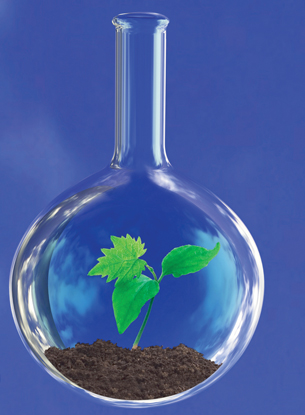

Module 6—Petrochemicals
 Reflect on the Big Picture
Reflect on the Big Picture

© Chepko Danil Vitalevich/shutterstock
The effects of a technology are often realized some time after the technology is put into use. In this lesson you completed a Reflect and Connect activity in which you began to record some issues related to the use of organic halide compounds.
You have learned that organic halides are often used as solvents, often in chemical processes. A major concern is their toxicity and lack of ability to biodegrade. To respond to some of these issues, the chemical industry is taking steps to reduce possible environmental impacts.
Green chemistry describes principles that should be considered when designing industrial processes and even when using chemicals in laboratories or at home. A list of these principles appears in the Unit C Conclusion.
Consider the following two principles of green chemistry:
- Design safer chemicals and by-products—design chemical products to have little or no toxicity.
- Design chemicals and products to degrade after use—products should be able to degrade to harmless substances and should not accumulate in the environment.
Retrieve your copy of the Module 6: Lesson 1 Assignment that you saved to your computer in Lesson 1. Look at how you organized the chemical structures for the compounds shown in “Figure 2” on page 413 of the textbook. Did you group the three organic halides together?
RBP 1. Review the diagrams of the petrochemicals from the Lesson 1 Assignment, and list the three organic halides. Use the Internet to research each of the three organic halide petrochemicals you listed. Consider the following questions:
- How is this substance used?
- Is this substance considered a toxic substance?
- Is this substance biodegradable?
Summarize the results of your research in a brief table. Save a copy of your response in your course folder.
In recent years there has been much debate about the effects of chlorine use on the environment. In Module 3 you learned that chlorine is a strong oxidizing agent, meaning that it can readily react with many substances, including organic compounds. These reactions are used to disinfect water, cause bleaching, and to make petrochemicals resulting in plastics. Many people are concerned that chlorine introduced in organic halides can become involved in other chemical change, including reactions within biological systems that could be harmful.
In another example, the burning of polyvinyl chloride (PVC plastics) can produce a number of compounds including the toxic, chlorine-containing compound, dioxin. Given such possibilities, some think that chlorine use by chemical and other industries should be banned. An Internet search will produce much more information about this debate from the scientific community and from other perspectives.
 Module 6: Lesson 2 Assignment
Module 6: Lesson 2 Assignment
There is no assignment for this lesson.